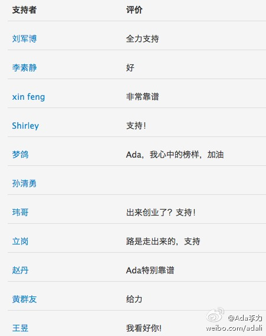
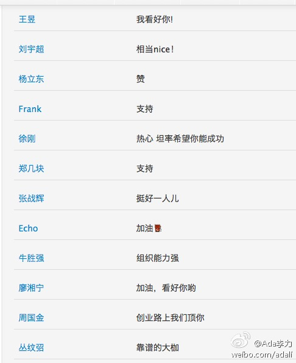
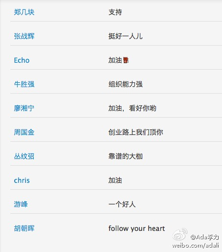

- 
- 
- 

Ada李力
2014-07-07
Ada李力
2014-07-07
偏好的创业者特质如下：1.热情，讲起自己做的事眼睛会放光。2.执著，不断在想办法钻出一条路。3.大方，知道达成目的 需要付出代价，不吝啬给。4.乐观，才能度过最苦的日子。5.能断，能做出当下能做的最好决定。6.对自己诚实，不欺骗自己。投资初创公司的一点点心得 - 黄绍麟  投资初创公司的一点点心得
投资初创公司的一点点心得
Ada李力
2014-07-07
这篇文章是明俊看到，特意叫我看的。我看完说，这六点我很符合啊。明俊说你别自以为是了 。我于是一条条给他分析，除了2执著和5能断，尚需要更长时间和更多事件来检验，其它的四条确实是我的优势。再说，创业“赌博”这事儿吧，没点儿自以为是还真没法干。
。我于是一条条给他分析，除了2执著和5能断，尚需要更长时间和更多事件来检验，其它的四条确实是我的优势。再说，创业“赌博”这事儿吧，没点儿自以为是还真没法干。
@Ada李力:
偏好的创业者特质如下：1.热情，讲起自己做的事眼睛会放光。2.执著，不断在想办法钻出一条路。3.大方，知道达成目的 需要付出代价，不吝啬给。4.乐观，才能度过最苦的日子。5.能断，能做出当下能做的最好决定。6.对自己诚实，不欺骗自己。投资初创公司的一点点心得 - 黄绍麟 投资初创公司的一点点心得